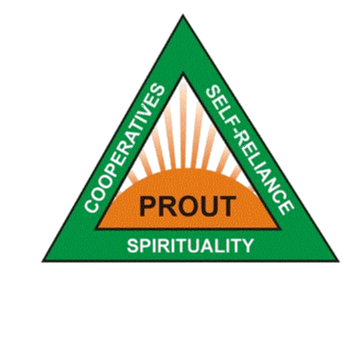
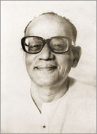
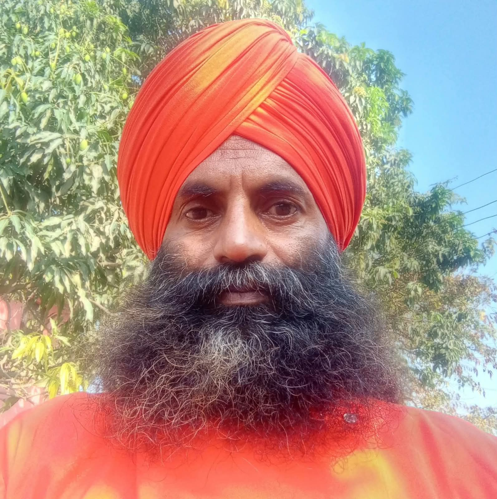
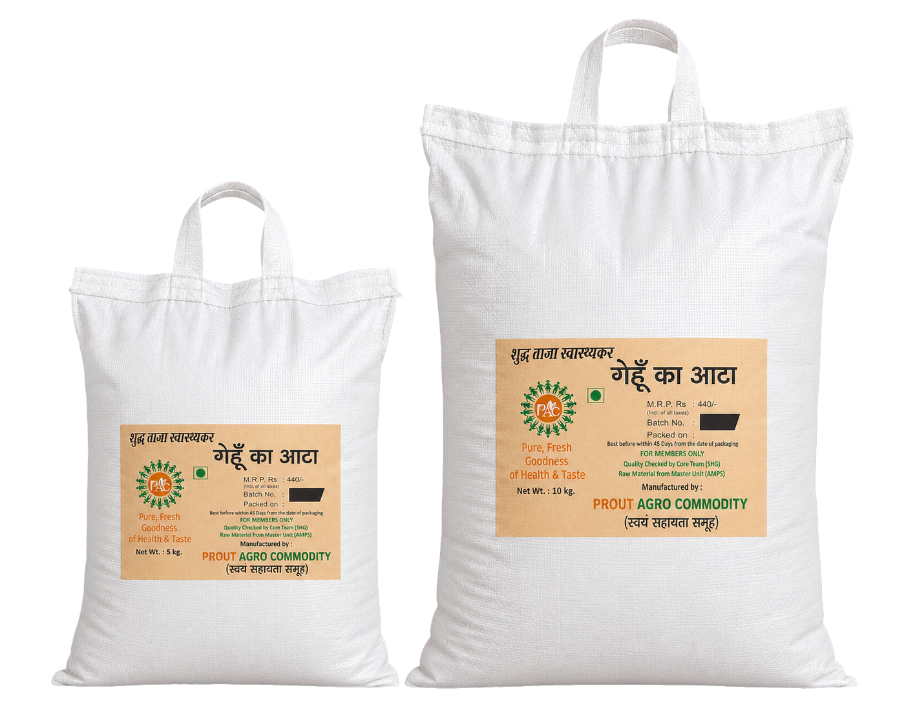
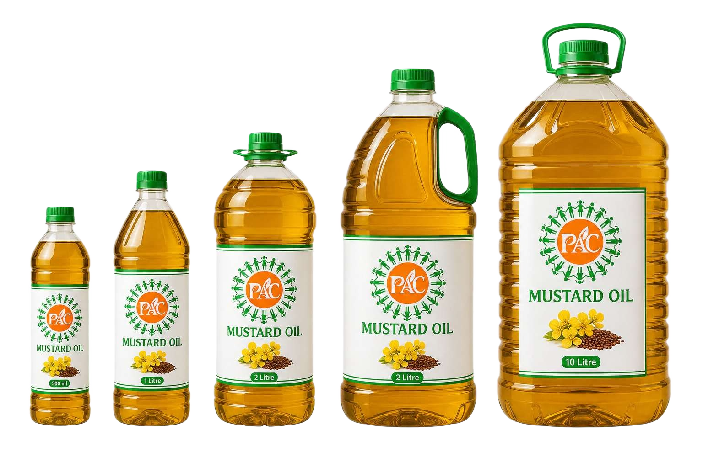

Economic democracy
Local people participate in decisions that shape their livelihoods and regional economy.

Progressive Utilization TheoryPROUT and PROUT Cooperatives
PROUT is a socio-economic philosophy formulated by Prabhat Ranjan Sarkar. It advocates local economic planning, responsible utilisation of resources and cooperative enterprises in which members share ownership, decisions and benefits.
The cooperative idea
Local people participate in decisions that shape their livelihoods and regional economy.
Material, human and natural resources are used carefully, efficiently and for broad welfare.
Planning begins with local needs, conditions, skills, raw materials and purchasing capacity.
Members combine work, responsibility and shared benefit while remaining accountable for quality.
| Theme | What it means | Cooperative expression |
|---|---|---|
| Ownership | Economic participation should not be separated from responsibility. | Members contribute, deliberate and share results. |
| Local economy | Resources should strengthen the area and people from which they arise. | Local sourcing, local skills and local distribution are prioritised. |
| Production | Utility and public need guide production alongside financial viability. | Quality essentials are produced transparently and without unnecessary intermediaries. |
| Development | Progress includes material security, social wellbeing and care for living systems. | Economic work is evaluated by its benefit to members, consumers and the environment. |

Origins of the philosophy
Sarkar began developing PROUT in 1959 and formally outlined its principles in the early 1960s. The philosophy is associated with his broader Neohumanist outlook, which extends care and moral consideration beyond human society to animals, plants and the natural world.
For PROUT, cooperatives connect this ethical outlook with everyday economics: shared management, productive work, fair distribution and resilient local communities.
How PAC works

Raw materials are sourced from the Muradnagar Master Unit and known cooperative channels.

Produce is cleaned, processed or prepared according to the needs of each product.

Packaging is handled in-house where possible and through carefully selected outside packers when required.
Products reach consumers through direct enquiries and the Madhukanan Ashram location in Chhatarpur.
Hygiene and non-adulteration
PAC’s operating aim is to keep products traceable, clean and free from adulteration through a limited number of supervised handling stages.
Our operations timeline
The initiative starts under Acharya Vimlananand Avadhuta with a small founding group.
Relationships are established for wheat, oil and other agricultural raw materials.
In-house processes develop alongside selected hygienic external packing support.
PAC serves consumers through enquiries and distribution at Madhukanan Ashram, Chhatarpur.
Become a member
Choose the membership that best matches how you would like to participate in and support the cooperative.
| Membership | Responsibilities | Benefits | Annual subscription |
|---|---|---|---|
| Volunteer Member | Participating in meetings, stall support and cooperative activities. | Profit sharing and 10% discount on products. | ₹5,500 / year |
| Producer Member | Responsible cultivation, produce contribution and quality coordination. | Market access, profit sharing and 10% discount on products. | ₹7,500 / year |
| Processing Member | Supporting cleaning, processing, packaging and quality oversight. | Skill development, profit sharing and 10% discount on products. | ₹6,500 / year |
| Supporter Member | Community outreach, event assistance and cooperative promotion. | Member updates, event participation and 10% discount on products. | ₹3,500 / year |